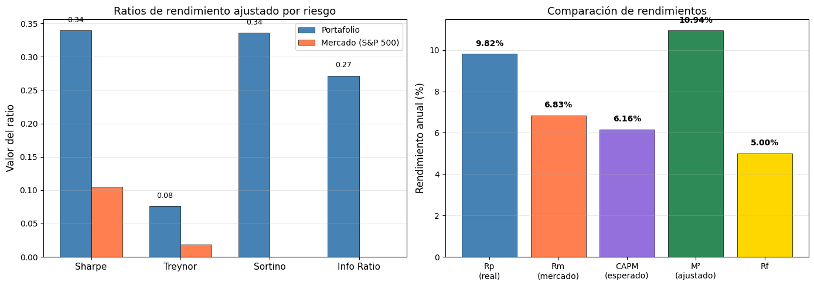

6. Medidas de Desempeño de Portafolios#
Ratios de información: ¿qué tan bien lo hizo mi portafolio?#
Los ratios de desempeño permiten evaluar si el rendimiento de un portafolio compensa adecuadamente el riesgo asumido. No basta con mirar el rendimiento bruto: un portafolio que rindió 20% con altísima volatilidad puede ser peor que uno que rindió 12% con baja volatilidad.
En este cuaderno calculamos 6 ratios fundamentales con datos reales:
Ratio |
¿Qué mide? |
Fórmula |
|---|---|---|
Sharpe |
Rendimiento por unidad de riesgo total (\(\sigma\)) |
\(\frac{R_p - R_f}{\sigma_p}\) |
Treynor |
Rendimiento por unidad de riesgo sistemático (\(\beta\)) |
\(\frac{R_p - R_f}{\beta_p}\) |
Alfa de Jensen |
Rendimiento en exceso vs. lo que predice el CAPM |
\(\alpha = R_p - [R_f + \beta_p(R_m - R_f)]\) |
Sortino |
Rendimiento por unidad de riesgo a la baja |
\(\frac{R_p - R_f}{\sigma_{downside}}\) |
Ratio de Información |
Rendimiento activo por unidad de tracking error |
\(\frac{R_p - R_b}{\sigma(R_p - R_b)}\) |
Modigliani (M²) |
Rendimiento ajustado al mismo riesgo del mercado |
\(M^2 = R_f + \frac{R_p - R_f}{\sigma_p} \cdot \sigma_m\) |
Datos del ejemplo#
Construiremos un portafolio equiponderado con 5 acciones reales y lo compararemos contra el S&P 500 como benchmark.
Paso 1 — Descargar datos y construir el portafolio#
Descargamos precios de cierre de 5 acciones diversificadas por sector y del S&P 500 como benchmark:
Ticker |
Empresa |
Sector |
|---|---|---|
AAPL |
Apple |
Tecnología |
JNJ |
Johnson & Johnson |
Salud |
JPM |
JPMorgan Chase |
Financiero |
XOM |
ExxonMobil |
Energía |
PG |
Procter & Gamble |
Consumo básico |
[1]:
import numpy as np
import pandas as pd
import matplotlib.pyplot as plt
import yfinance as yf
# ─── Configuración ───
tickers = ["AAPL", "JNJ", "JPM", "XOM", "PG"]
benchmark = "^GSPC"
inicio = "2022-01-01"
fin = "2025-01-01"
rf_anual = 0.05 # Tasa libre de riesgo anual (5%)
rf_diario = (1 + rf_anual) ** (1/252) - 1 # Tasa diaria equivalente
# ─── Descargar datos ───
todos = tickers + [benchmark]
datos = yf.download(todos, start=inicio, end=fin)["Close"]
datos.columns = [t if t != benchmark else "SP500" for t in datos.columns]
# ─── Rendimientos logarítmicos diarios ───
rendimientos = np.log(datos / datos.shift(1)).dropna()
# ─── Portafolio equiponderado (20% cada activo) ───
pesos = np.array([1/len(tickers)] * len(tickers))
rendimientos["Portafolio"] = rendimientos[tickers].dot(pesos)
print(f"Período: {inicio} a {fin}")
print(f"Activos: {tickers}")
print(f"Pesos: {pesos}")
print(f"Tasa libre de riesgo: {rf_anual:.0%} anual ({rf_diario:.6f} diaria)")
print(f"Observaciones: {len(rendimientos)} días")
rendimientos[tickers + ["SP500", "Portafolio"]].head()
[*********************100%***********************] 6 of 6 completed
Período: 2022-01-01 a 2025-01-01
Activos: ['AAPL', 'JNJ', 'JPM', 'XOM', 'PG']
Pesos: [0.2 0.2 0.2 0.2 0.2]
Tasa libre de riesgo: 5% anual (0.000194 diaria)
Observaciones: 752 días
[1]:
| AAPL | JNJ | JPM | XOM | PG | SP500 | Portafolio | |
|---|---|---|---|---|---|---|---|
| Date | |||||||
| 2022-01-04 | -0.012773 | -0.002685 | 0.037209 | 0.036924 | 0.003493 | -0.000630 | 0.012434 |
| 2022-01-05 | -0.026960 | 0.006642 | -0.018451 | 0.012361 | 0.004517 | -0.019583 | -0.004379 |
| 2022-01-06 | -0.016834 | -0.003432 | 0.010568 | 0.023248 | -0.008439 | -0.000964 | 0.001022 |
| 2022-01-07 | 0.000988 | 0.013427 | 0.009860 | 0.008163 | -0.000553 | -0.004058 | 0.006377 |
| 2022-01-10 | 0.000116 | -0.004956 | 0.000957 | -0.005970 | -0.013735 | -0.001442 | -0.004718 |
Estadísticas básicas anualizadas#
Antes de calcular los ratios, necesitamos las métricas base: rendimiento medio, volatilidad y beta del portafolio.
[2]:
# ─── Métricas anualizadas ───
Rp = rendimientos["Portafolio"].mean() * 252 # Rendimiento portafolio
Rm = rendimientos["SP500"].mean() * 252 # Rendimiento mercado
sigma_p = rendimientos["Portafolio"].std() * np.sqrt(252) # Volatilidad portafolio
sigma_m = rendimientos["SP500"].std() * np.sqrt(252) # Volatilidad mercado
# ─── Beta del portafolio ───
cov_pm = rendimientos["Portafolio"].cov(rendimientos["SP500"])
var_m = rendimientos["SP500"].var()
beta_p = cov_pm / var_m
# ─── Downside deviation (solo rendimientos negativos) ───
exceso_diario = rendimientos["Portafolio"] - rf_diario
downside = exceso_diario[exceso_diario < 0]
sigma_downside = np.sqrt((downside ** 2).mean()) * np.sqrt(252)
# ─── Tracking error ───
tracking = rendimientos["Portafolio"] - rendimientos["SP500"]
tracking_error = tracking.std() * np.sqrt(252)
print("=" * 55)
print(" MÉTRICAS BASE (anualizadas)")
print("=" * 55)
print(f" Rendimiento portafolio (Rp) = {Rp:.2%}")
print(f" Rendimiento mercado (Rm) = {Rm:.2%}")
print(f" Tasa libre de riesgo (Rf) = {rf_anual:.2%}")
print(f" Volatilidad portafolio (σp) = {sigma_p:.2%}")
print(f" Volatilidad mercado (σm) = {sigma_m:.2%}")
print(f" Beta del portafolio (βp) = {beta_p:.4f}")
print(f" Downside deviation = {sigma_downside:.2%}")
print(f" Tracking error = {tracking_error:.2%}")
print("=" * 55)
=======================================================
MÉTRICAS BASE (anualizadas)
=======================================================
Rendimiento portafolio (Rp) = 9.82%
Rendimiento mercado (Rm) = 6.83%
Tasa libre de riesgo (Rf) = 5.00%
Volatilidad portafolio (σp) = 14.19%
Volatilidad mercado (σm) = 17.51%
Beta del portafolio (βp) = 0.6317
Downside deviation = 14.34%
Tracking error = 10.99%
=======================================================
Ratio 1 — Sharpe#
El ratio de Sharpe mide cuánto rendimiento en exceso (sobre la tasa libre de riesgo) se obtiene por cada unidad de riesgo total (volatilidad).
Sharpe > 1 → excelente relación riesgo-rendimiento
Sharpe entre 0.5 y 1 → buena
Sharpe < 0.5 → pobre
Sharpe < 0 → el portafolio rindió menos que la tasa libre de riesgo
Usa riesgo total (:math:`sigma_p`) → adecuado para portafolios no diversificados o como medida general.
[3]:
# ─── Ratio de Sharpe ───
sharpe = (Rp - rf_anual) / sigma_p
print(f" Sharpe = (Rp - Rf) / σp")
print(f" Sharpe = ({Rp:.2%} - {rf_anual:.2%}) / {sigma_p:.2%}")
print(f" Sharpe = {Rp - rf_anual:.2%} / {sigma_p:.2%}")
print(f"")
print(f" ► Sharpe = {sharpe:.4f}")
# También calculamos el Sharpe del mercado para comparar
sharpe_mercado = (Rm - rf_anual) / sigma_m
print(f" ► Sharpe del mercado (S&P 500) = {sharpe_mercado:.4f}")
print(f"")
if sharpe > sharpe_mercado:
print(f" → El portafolio tiene MEJOR relación riesgo-rendimiento que el mercado")
else:
print(f" → El mercado tiene MEJOR relación riesgo-rendimiento que el portafolio")
Sharpe = (Rp - Rf) / σp
Sharpe = (9.82% - 5.00%) / 14.19%
Sharpe = 4.82% / 14.19%
► Sharpe = 0.3394
► Sharpe del mercado (S&P 500) = 0.1047
→ El portafolio tiene MEJOR relación riesgo-rendimiento que el mercado
Ratio 2 — Treynor#
El ratio de Treynor es similar al Sharpe, pero en lugar de usar el riesgo total (\(\sigma_p\)), usa el riesgo sistemático (\(\beta_p\)).
Diferencia clave con Sharpe:
Sharpe penaliza todo el riesgo (incluido el diversificable).
Treynor solo penaliza el riesgo de mercado.
→ Treynor es más apropiado para portafolios bien diversificados, donde el riesgo idiosincrático ya fue eliminado y solo queda el sistemático.
[4]:
# ─── Ratio de Treynor ───
treynor = (Rp - rf_anual) / beta_p
print(f" Treynor = (Rp - Rf) / βp")
print(f" Treynor = ({Rp:.2%} - {rf_anual:.2%}) / {beta_p:.4f}")
print(f"")
print(f" ► Treynor = {treynor:.4f}")
# Treynor del mercado (beta del mercado = 1)
treynor_mercado = (Rm - rf_anual) / 1.0
print(f" ► Treynor del mercado = {treynor_mercado:.4f}")
print(f"")
if treynor > treynor_mercado:
print(f" → El portafolio genera MÁS rendimiento por unidad de riesgo sistemático")
else:
print(f" → El mercado genera MÁS rendimiento por unidad de riesgo sistemático")
Treynor = (Rp - Rf) / βp
Treynor = (9.82% - 5.00%) / 0.6317
► Treynor = 0.0763
► Treynor del mercado = 0.0183
→ El portafolio genera MÁS rendimiento por unidad de riesgo sistemático
Ratio 3 — Alfa de Jensen (\(\alpha\))#
El alfa de Jensen mide el rendimiento en exceso del portafolio respecto a lo que debería haber rendido según el CAPM, dado su nivel de riesgo sistemático.
\(\alpha > 0\): el gestor agregó valor — rindió más de lo esperado para el riesgo asumido.
\(\alpha = 0\): el portafolio rindió exactamente lo que predice el CAPM.
\(\alpha < 0\): el gestor destruyó valor — no compensó el riesgo.
Es la medida clásica de la habilidad del gestor de portafolios.
[5]:
# ─── Alfa de Jensen ───
# Rendimiento esperado según CAPM
Rp_capm = rf_anual + beta_p * (Rm - rf_anual)
alpha_jensen = Rp - Rp_capm
print(f" α = Rp - [Rf + βp × (Rm - Rf)]")
print(f" α = {Rp:.2%} - [{rf_anual:.2%} + {beta_p:.4f} × ({Rm:.2%} - {rf_anual:.2%})]")
print(f" α = {Rp:.2%} - [{rf_anual:.2%} + {beta_p:.4f} × {Rm - rf_anual:.2%}]")
print(f" α = {Rp:.2%} - {Rp_capm:.2%}")
print(f"")
print(f" ► Alfa de Jensen = {alpha_jensen:.2%}")
print(f"")
if alpha_jensen > 0:
print(f" → El portafolio SUPERÓ lo que predice el CAPM en {alpha_jensen:.2%}")
print(f" → Interpretación: el gestor generó valor adicional")
else:
print(f" → El portafolio rindió {abs(alpha_jensen):.2%} MENOS que lo que predice el CAPM")
print(f" → Interpretación: no se compensó adecuadamente el riesgo asumido")
α = Rp - [Rf + βp × (Rm - Rf)]
α = 9.82% - [5.00% + 0.6317 × (6.83% - 5.00%)]
α = 9.82% - [5.00% + 0.6317 × 1.83%]
α = 9.82% - 6.16%
► Alfa de Jensen = 3.66%
→ El portafolio SUPERÓ lo que predice el CAPM en 3.66%
→ Interpretación: el gestor generó valor adicional
Ratio 4 — Sortino#
El ratio de Sortino es una mejora del Sharpe que solo penaliza la volatilidad a la baja (downside deviation), en lugar de toda la volatilidad.
¿Por qué es útil? Porque a un inversionista no le molesta la volatilidad al alza (ganancias inesperadas). Solo le preocupa la volatilidad cuando pierde dinero.
Sortino > Sharpe → la mayor parte de la volatilidad viene de rendimientos positivos (buena señal).
Sortino < Sharpe → hay mucha volatilidad a la baja (mala señal).
[6]:
# ─── Ratio de Sortino ───
sortino = (Rp - rf_anual) / sigma_downside
print(f" Sortino = (Rp - Rf) / σ_downside")
print(f" Sortino = ({Rp:.2%} - {rf_anual:.2%}) / {sigma_downside:.2%}")
print(f"")
print(f" ► Sortino = {sortino:.4f}")
print(f" ► Sharpe = {sharpe:.4f} (para comparar)")
print(f"")
if sortino > sharpe:
print(f" → Sortino > Sharpe: la volatilidad a la baja es MENOR que la total")
print(f" → Buena señal: gran parte de la volatilidad proviene de ganancias")
else:
print(f" → Sortino < Sharpe: hay proporcionalmente más volatilidad a la baja")
print(f" → El portafolio tiene más riesgo de pérdida del que sugiere Sharpe")
Sortino = (Rp - Rf) / σ_downside
Sortino = (9.82% - 5.00%) / 14.34%
► Sortino = 0.3359
► Sharpe = 0.3394 (para comparar)
→ Sortino < Sharpe: hay proporcionalmente más volatilidad a la baja
→ El portafolio tiene más riesgo de pérdida del que sugiere Sharpe
Ratio 5 — Ratio de Información (Information Ratio)#
El ratio de información mide cuánto rendimiento adicional (respecto al benchmark) obtiene el gestor por cada unidad de desviación respecto al benchmark.
Rendimiento activo (\(R_p - R_b\)): cuánto más (o menos) rindió el portafolio vs. el benchmark.
Tracking error (\(\sigma(R_p - R_b)\)): volatilidad de esa diferencia — qué tan consistente es el gestor en superar al benchmark.
IR |
Interpretación |
|---|---|
IR > 0.5 |
Gestor muy bueno |
0.25 < IR < 0.5 |
Gestor aceptable |
IR < 0.25 |
Gestor pobre |
Es la medida preferida en gestión activa y complementa al alfa de Jensen.
[7]:
# ─── Ratio de Información ───
rendimiento_activo = Rp - Rm # Rendimiento activo anualizado
info_ratio = rendimiento_activo / tracking_error
print(f" IR = (Rp - Rb) / Tracking Error")
print(f" IR = ({Rp:.2%} - {Rm:.2%}) / {tracking_error:.2%}")
print(f" IR = {rendimiento_activo:.2%} / {tracking_error:.2%}")
print(f"")
print(f" ► Information Ratio = {info_ratio:.4f}")
print(f"")
if rendimiento_activo > 0:
print(f" → El portafolio superó al benchmark en {rendimiento_activo:.2%}")
else:
print(f" → El portafolio quedó por debajo del benchmark en {abs(rendimiento_activo):.2%}")
print(f" → Tracking error = {tracking_error:.2%} (desviación respecto al benchmark)")
IR = (Rp - Rb) / Tracking Error
IR = (9.82% - 6.83%) / 10.99%
IR = 2.98% / 10.99%
► Information Ratio = 0.2716
→ El portafolio superó al benchmark en 2.98%
→ Tracking error = 10.99% (desviación respecto al benchmark)
Ratio 6 — Modigliani (M²)#
La medida de Modigliani & Modigliani (M²) ajusta el rendimiento del portafolio para que tenga el mismo nivel de riesgo que el mercado. Esto permite una comparación directa en términos de rendimiento.
Idea intuitiva: «Si mi portafolio tuviera exactamente la misma volatilidad que el mercado, ¿cuánto habría rendido?»
\(M^2 > R_m\): el portafolio es superior al mercado (a igual riesgo, rinde más).
\(M^2 < R_m\): el portafolio es inferior al mercado.
\(M^2 - R_m\): diferencia de rendimiento ajustada por riesgo (se expresa en %).
[8]:
# ─── Medida de Modigliani (M²) ───
M2 = rf_anual + sharpe * sigma_m
print(f" M² = Rf + Sharpe_p × σm")
print(f" M² = {rf_anual:.2%} + {sharpe:.4f} × {sigma_m:.2%}")
print(f"")
print(f" ► M² = {M2:.2%}")
print(f" ► Rendimiento del mercado = {Rm:.2%}")
print(f" ► Diferencia (M² - Rm) = {M2 - Rm:.2%}")
print(f"")
if M2 > Rm:
print(f" → A igual riesgo que el mercado, el portafolio habría rendido {M2 - Rm:.2%} MÁS")
else:
print(f" → A igual riesgo que el mercado, el portafolio habría rendido {abs(M2 - Rm):.2%} MENOS")
M² = Rf + Sharpe_p × σm
M² = 5.00% + 0.3394 × 17.51%
► M² = 10.94%
► Rendimiento del mercado = 6.83%
► Diferencia (M² - Rm) = 4.11%
→ A igual riesgo que el mercado, el portafolio habría rendido 4.11% MÁS
Resumen comparativo de todos los ratios#
[9]:
# ─── Tabla resumen ───
resumen = pd.DataFrame({
"Ratio": ["Sharpe", "Treynor", "Alfa de Jensen", "Sortino",
"Information Ratio", "Modigliani (M²)"],
"Valor Portafolio": [f"{sharpe:.4f}", f"{treynor:.4f}", f"{alpha_jensen:.2%}",
f"{sortino:.4f}", f"{info_ratio:.4f}", f"{M2:.2%}"],
"Valor Mercado": [f"{sharpe_mercado:.4f}", f"{treynor_mercado:.4f}", "0.00%",
"—", "—", f"{Rm:.2%}"],
"Medida de riesgo": ["σ (total)", "β (sistemático)", "β (CAPM)",
"σ_downside (a la baja)", "Tracking error", "σ (ajustado)"],
"Interpretación": [
"Rend. por unidad de riesgo total",
"Rend. por unidad de riesgo sistemático",
"Exceso vs. predicción CAPM",
"Rend. por unidad de riesgo bajista",
"Rend. activo por unidad de tracking error",
"Rend. ajustado al riesgo del mercado"
]
})
resumen.index = resumen.index + 1
resumen
[9]:
| Ratio | Valor Portafolio | Valor Mercado | Medida de riesgo | Interpretación | |
|---|---|---|---|---|---|
| 1 | Sharpe | 0.3394 | 0.1047 | σ (total) | Rend. por unidad de riesgo total |
| 2 | Treynor | 0.0763 | 0.0183 | β (sistemático) | Rend. por unidad de riesgo sistemático |
| 3 | Alfa de Jensen | 3.66% | 0.00% | β (CAPM) | Exceso vs. predicción CAPM |
| 4 | Sortino | 0.3359 | — | σ_downside (a la baja) | Rend. por unidad de riesgo bajista |
| 5 | Information Ratio | 0.2716 | — | Tracking error | Rend. activo por unidad de tracking error |
| 6 | Modigliani (M²) | 10.94% | 6.83% | σ (ajustado) | Rend. ajustado al riesgo del mercado |
Visualización comparativa#
[10]:
fig, axes = plt.subplots(1, 2, figsize=(14, 5))
# ─── Panel 1: Ratios adimensionales (Sharpe, Treynor, Sortino, IR) ───
ax1 = axes[0]
ratios_nombres = ["Sharpe", "Treynor", "Sortino", "Info Ratio"]
ratios_port = [sharpe, treynor, sortino, info_ratio]
ratios_merc = [sharpe_mercado, treynor_mercado, None, None]
x = np.arange(len(ratios_nombres))
ancho = 0.35
barras_p = ax1.bar(x - ancho/2, ratios_port, ancho, label="Portafolio",
color="steelblue", edgecolor="black", linewidth=0.5)
barras_m = ax1.bar(x + ancho/2,
[v if v is not None else 0 for v in ratios_merc],
ancho, label="Mercado (S&P 500)",
color="coral", edgecolor="black", linewidth=0.5)
ax1.set_xticks(x)
ax1.set_xticklabels(ratios_nombres, fontsize=11)
ax1.set_ylabel("Valor del ratio", fontsize=12)
ax1.set_title("Ratios de rendimiento ajustado por riesgo", fontsize=13)
ax1.legend(fontsize=10)
ax1.axhline(0, color="black", linewidth=0.5)
ax1.grid(axis="y", alpha=0.3)
# Agregar valores sobre las barras
for bar in barras_p:
ax1.text(bar.get_x() + bar.get_width()/2, bar.get_height() + 0.01,
f"{bar.get_height():.2f}", ha="center", va="bottom", fontsize=9)
# ─── Panel 2: Comparación de rendimientos (%) ───
ax2 = axes[1]
nombres_rend = ["Rp\n(real)", "Rm\n(mercado)", "CAPM\n(esperado)", "M²\n(ajustado)", "Rf"]
valores_rend = [Rp, Rm, Rp_capm, M2, rf_anual]
colores_rend = ["steelblue", "coral", "mediumpurple", "seagreen", "gold"]
barras = ax2.bar(nombres_rend, [v * 100 for v in valores_rend],
color=colores_rend, edgecolor="black", linewidth=0.5)
ax2.set_ylabel("Rendimiento anual (%)", fontsize=12)
ax2.set_title("Comparación de rendimientos", fontsize=13)
ax2.grid(axis="y", alpha=0.3)
for bar, val in zip(barras, valores_rend):
ax2.text(bar.get_x() + bar.get_width()/2, bar.get_height() + 0.3,
f"{val:.2%}", ha="center", va="bottom", fontsize=10, fontweight="bold")
plt.tight_layout()
plt.show()

Conclusiones#
¿Cuándo usar cada ratio?#
Situación |
Ratio recomendado |
¿Por qué? |
|---|---|---|
Evaluar un portafolio único |
Sharpe |
Usa riesgo total, aplicable siempre |
Comparar portafolios bien diversificados |
Treynor |
Solo riesgo sistemático es relevante |
Medir habilidad del gestor |
Alfa de Jensen |
¿Generó valor sobre lo que predice el CAPM? |
Preocupación por pérdidas |
Sortino |
Solo penaliza la volatilidad a la baja |
Gestión activa vs. benchmark |
Information Ratio |
¿Cuánto gana por desviarse del benchmark? |
Comparar rendimientos en términos absolutos |
Modigliani (M²) |
Resultado en %, fácil de interpretar |
Relación entre los ratios:#
Sharpe y M² están directamente relacionados: \(M^2 = R_f + \text{Sharpe} \times \sigma_m\). Si el Sharpe es mayor que el del mercado, M² superará a \(R_m\).
Treynor y Alfa de Jensen usan el mismo riesgo (\(\beta\)), pero Jensen da una diferencia absoluta y Treynor un ratio.
Sortino mejora al Sharpe al distinguir volatilidad buena (al alza) de mala (a la baja).
El Information Ratio es independiente de los anteriores: mide consistencia en superar al benchmark.
Ningún ratio es suficiente por sí solo. Un análisis robusto requiere evaluar varios ratios en conjunto para obtener una imagen completa del desempeño ajustado por riesgo.